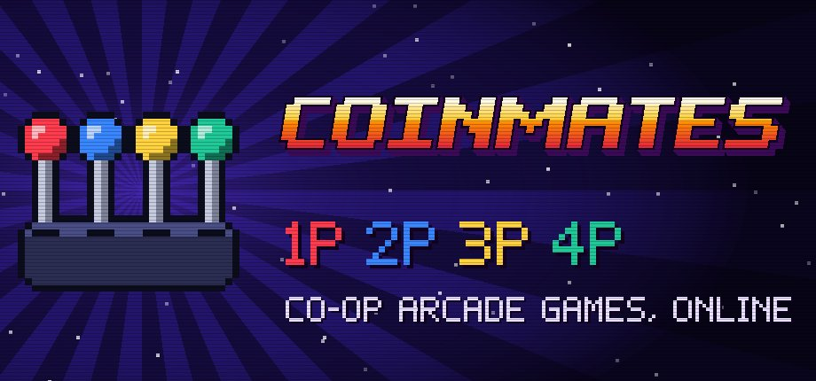
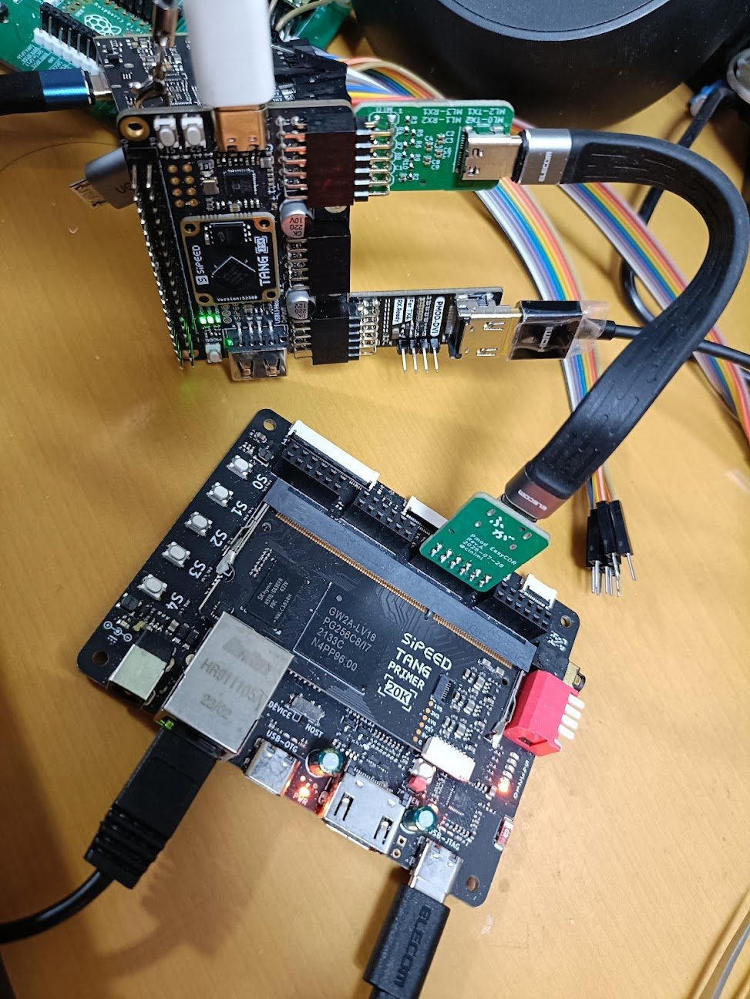
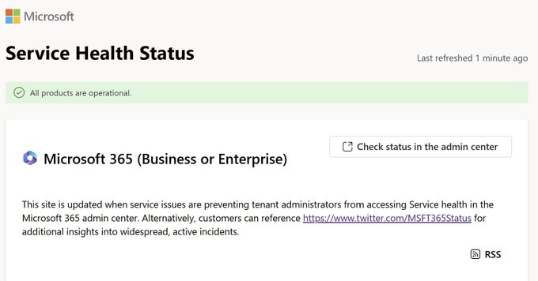
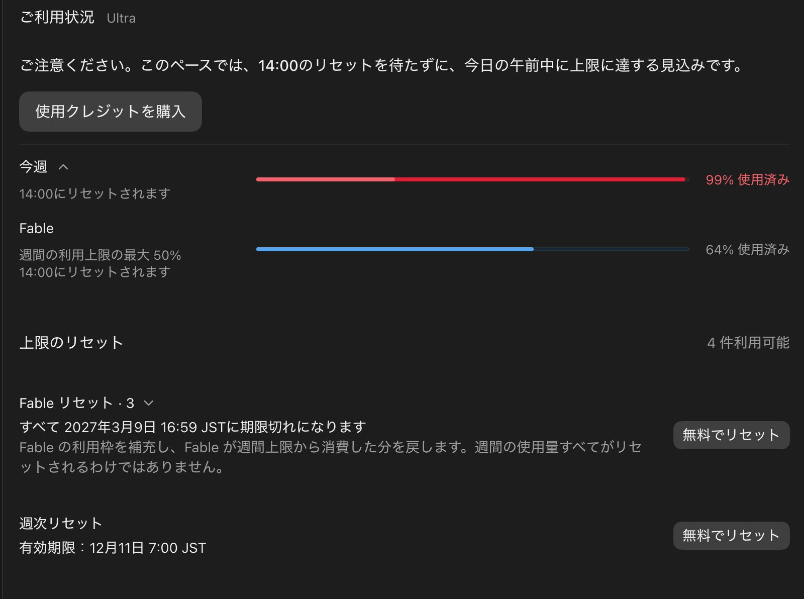
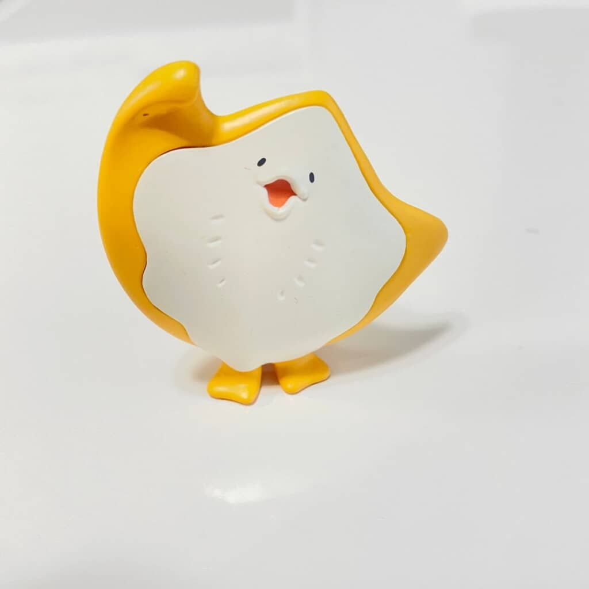
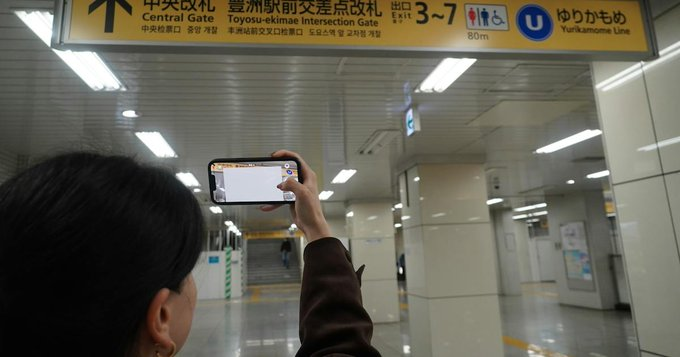
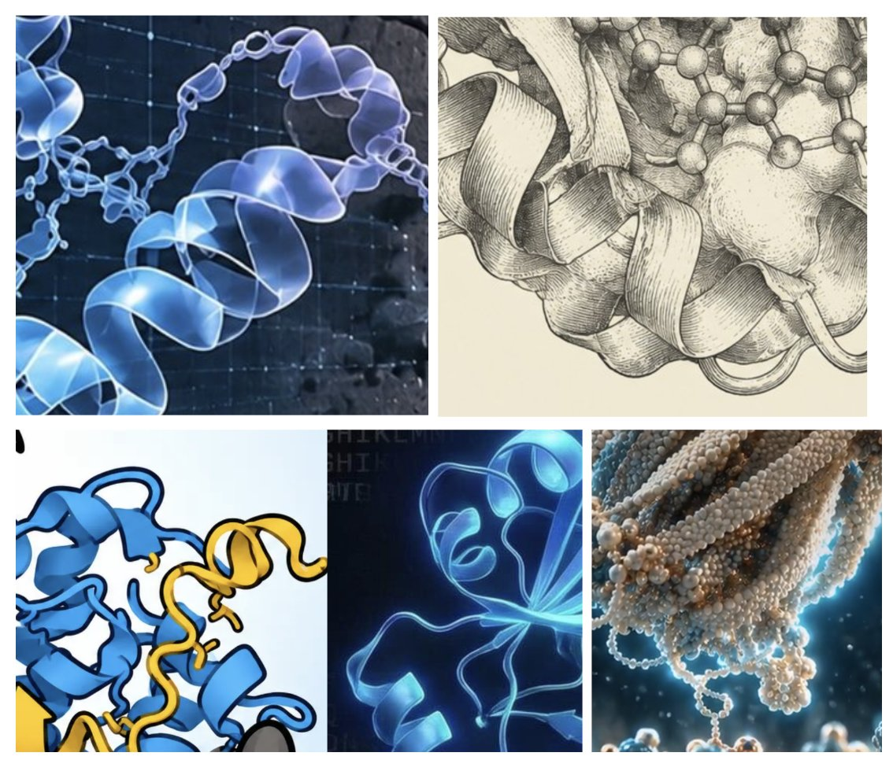

今どき海外で売るアニメは放送前完パケが当然なので、放送が落ちてるアニメは「国内だけで確実にペイ出来るアニメ」なのか「海外に売りようのないアニメ」かのどちらかと考えられるんだよな…。
タイムライン要約
102 件今日のまとめ
提示されたタイムラインから、以下の3〜5点の要約を作成しました。
* **AIとエミュレーション技術の発展**: AIを統合したFM TOWNSエミュレーター「Geartowns」が登場し、ゲーム解析やチート作成、翻訳などへの応用が可能に。また、低遅延のオンライン協力プレイ対応アーケードエミュレーター「Coinmates」も発表された。Google Geminiの新モデル示唆や日本の音声AIラボのElevenLabsへの参画など、AI技術の進化と社会実装が進んでいる。
* **宇宙開発におけるH3ロケットの注目度向上**: SpaceXが自社衛星打ち上げを優先する戦略にシフトしたことで、他国・他社の衛星打ち上げ需要が高まり、日本のH3ロケットに商機が到来。しかし、現状ではその需要を満たす生産能力が不足している。
* **エンタメ・クリエイティブ業界の動向**: 漫画「ウィッチウォッチ」が完結し、作者は安定した人気作を輩出しつつ新たな挑戦へ意欲。映画「ゴジラ-0.0」ではメンタルヘルスコーディネーターが導入されるなど、クリエイティブ現場での新たな配慮が注目された。ゲーム業界では新作リリースや過去の主要発表が振り返られている。
* **経済・社会情勢の課題と変化**: 米AI株安が世界市場に影響を与え、国内では最高峰スパコン「富岳」への不正アクセスが発覚。生活保護受給者の医療費問題への不満や、結婚条件に「資産運用」が加わるなど、社会制度や人々の価値観における変化と課題が浮上している。
* **AIとエミュレーション技術の発展**: AIを統合したFM TOWNSエミュレーター「Geartowns」が登場し、ゲーム解析やチート作成、翻訳などへの応用が可能に。また、低遅延のオンライン協力プレイ対応アーケードエミュレーター「Coinmates」も発表された。Google Geminiの新モデル示唆や日本の音声AIラボのElevenLabsへの参画など、AI技術の進化と社会実装が進んでいる。
* **宇宙開発におけるH3ロケットの注目度向上**: SpaceXが自社衛星打ち上げを優先する戦略にシフトしたことで、他国・他社の衛星打ち上げ需要が高まり、日本のH3ロケットに商機が到来。しかし、現状ではその需要を満たす生産能力が不足している。
* **エンタメ・クリエイティブ業界の動向**: 漫画「ウィッチウォッチ」が完結し、作者は安定した人気作を輩出しつつ新たな挑戦へ意欲。映画「ゴジラ-0.0」ではメンタルヘルスコーディネーターが導入されるなど、クリエイティブ現場での新たな配慮が注目された。ゲーム業界では新作リリースや過去の主要発表が振り返られている。
* **経済・社会情勢の課題と変化**: 米AI株安が世界市場に影響を与え、国内では最高峰スパコン「富岳」への不正アクセスが発覚。生活保護受給者の医療費問題への不満や、結婚条件に「資産運用」が加わるなど、社会制度や人々の価値観における変化と課題が浮上している。
該当する投稿が見つかりませんでした
Torishima / INTPさんがリポスト
デバッグ機能＆AI連携を搭載した「FM TOWNSエミュレーター」が登場!!
こちら「Geartowns」の特徴は、AIエージェントと連携できるMCPサーバーを内蔵しているという点で、Claude CodeやOpenAI Codexと連携し、CPUの実行状態やメモリー、スプライト、音源などの内部情報をAIから調査できる。
つまり、ゲームの仕組みの解析だけでなく、チート作成、データ改造、テキスト翻訳などにも活用可能ということになる。
https://github.com/drhelius/Geartowns…
AIとの連携によって、デバッグやデータ改造がより身近になり、いつかはハックロムの制作までAIが手助けしてくれる未来がやってくるかもしれない。
この機能は、いつか「コンシューマーゲーム機のエミュレーター」や「アーケードエミュレーター」にも搭載される気がするぞッッ!!

早めに寝たけどまだ疲労感が抜けず腰と腕が痛いし。
【ナマポ】生活保護受給者の医療費無料問題 ヤバイ「医療関係者はナマポ嫌い多いと思う。 ゴミクズしかいないから」

【ナマポ】生活保護受給者の医療費無料問題 ヤバイ「医療関係者はナマポ嫌い多いと思う。 ゴミクズしかいないから」 : ハムスター速報
昨日は疲れ切った状態で仕事どうにか切り抜けた。
Torishima / INTPさんがリポスト
チャットAIが「早く検査と治療しろ」言うてて、病院いったらお医者さんが「まずは様子見よう」って数ヶ月様子見てるうちにどんどん状況が悪化して…これから、だんだんお医者さんよりチャットAIを信じる人が増える流れは避けられない気がする。
Torishima / INTPさんがリポスト
引用で先週もらったんだけど篠原先生多分初めて本誌作品で複数30巻到達した人になるんだよね 安定感は歴代でも随一だったと言える
Torishima / INTPさんがリポスト
SpaceXのせいで他のロケットはオワコン論が流行るのはそうやろなって思うんだけど現実はもう少し先に行っててSpaceXは自社で飛ばしてるスターリンクを打ち上げた方が圧倒的に儲かる組織構造に至っているので逆に国や他社の衛星を上げるのを渋っていてフェードアウト傾向にある。
更にAIデータセンターの衛星群構築も視野に入っているのでSpaceX一強を通り越してSpaceXが自社だけで勝手にやるの域になりつつあるんよ。恐ろしいでホンマ。
だからこそSpaceXに打ち上げてもらえなくなった国や民間衛星が溢れ始めH3に商機が見えている。
Gemini 4 世代のモデル、マジで Ultra / Pro / Flash のどれに該当するのかちゃんと教えてほしい
StudioYebisu
@studio_yebisu
Google勢いありすぎだろ…
Fable5.2超えという噂の、Gemini 4 Proモデル…？？
なんか新しいGeminiモデル。も、もう来るやんこれ!!
Gemini-4-neonっていう聞いたことのねぇモデルが
Gemini APPの中に埋め込まれてるっていう情報をAI Trackerっていう監視サイトが報告してたから
普通に調べたんやが、

Torishima / INTPさんがリポスト
Google勢いありすぎだろ…
Fable5.2超えという噂の、Gemini 4 Proモデル…？？
なんか新しいGeminiモデル。も、もう来るやんこれ!!
Gemini-4-neonっていう聞いたことのねぇモデルが
Gemini APPの中に埋め込まれてるっていう情報をAI Trackerっていう監視サイトが報告してたから
普通に調べたんやが、
ガチでModel名存在してるやんけ…!!
該当タグの中調査して見たが、「アップセル（課金導線）出し分けテーブル」の中に確かにGemini-4-neonが存在してる。
※皆もGemini APP Webのコンソールで確認出来るぞ！
Argon Carbon Neonがテーブルに並んでて、これがKryptonを更に強化した最上位Proモデルなのか、はたまた別のクラスなのかはわからんけど、近日中にまたもやモデルリリースする準備が行われているのは確定事項
なにせ聞いたことないモデル名が急にフラグに出てきただけだからわかんねぇ…
よく宿にあるおそらく女性向けのエステ的なマッサージには興味ないので、首ボギボキ背中バキバキやってくれるマッサージがいいわ。
なるほど！（見出ししか読んでなかった）
ゆうくん.vortis
@you_vortis
7話で4月ー6月分やるというお話です
セミ、キロ二百ドルって…
言われてみれば夜中に一気に収穫とか、瞬間の人出確保ができないと無理だと思えば、常勤で人出確保は固定費で無理な構造なら、本業が別にあるのかな。
＞ω＜さんがリポスト
蝉まで養殖しているのには驚きだった。昆虫の養殖でも大陸はスケールが違いますね。
かみぱっぱ
@kamipapa2
蝉の養殖場か…。
蝉の卵の産み場所や孵化直後の幼生は初めて見たかも。
食べたいとは思わないけど、中国では羽化前の柔らかい時に食べるのね…。
なんか唐揚げみたいな肉質が見えるな。

日経平均、米AI株安が重荷 NVIDIA決算控え様子見（先読み株式相場）

日経平均、米AI株安が重荷 NVIDIA決算控え様子見（先読み株式相場）
全7話？？？？
アプリ版の活動記録3回分ぐらいだけど尺の薄さは大丈夫なのか？
オリコンニュース【アニメ】
@oricon_anime_
『ラブライブ！蓮ノ空』来年1月放送🪷
106期生のマイカ＆葵の初歌唱楽曲が解禁
⠀
特別PV公開／本編は全7話構成
https://oricon.co.jp/news/2492942/full/?utm_source=Twitter&utm_medium=social&ref_cd=jstw003…
⠀
楽曲「Dream Believers（106期 START Ver.）」
作詞：畑 亜貴 作編曲：渡辺拓也


アーケードゲームのオンライン協力プレイに特化したエミュレーター「Coinmates」が登場!!
こちらは、MAMEをベースに、最大4人でのオンライン協力プレイを実現したもの。
そして最大の特徴は、通信遅延を感じにくくする「ロールバック方式」を採用していることだ。
従来のKailleraなどで見られた、通信相手との同期待ちによる操作の引っ掛かりや、フレームレートの不安定さを改善。
今回採用されたロールバック方式では、自分の操作をすぐにゲームへ反映し、通信の遅れはゲームの状態を巻き戻して再計算することで補正する。
これは勝手移植のオンライン対戦・協力プレイでも採用されている方式なので、見覚えのある方は多いかもしれない。
使い方も簡単で、ルームコードを共有するだけで参加でき、アカウント登録もルーターのポート開放も不要。途中参加や切断後の再接続、ホストの引き継ぎにも対応している。
また、Windows、Mac、Linux、Steam Deck間でのクロスプレイも可能。
https://github.com/mcerina/coinmates…
今から20年以上前に「Kailleraスゲー!! オンライン対戦もできるんだ!!」と感動した方などは、今の技術の進歩に超絶驚くと思うンだッッ!!

その発想はなかった。
まさかケツシステムだったとは…
コムギ
@kmg296
楽園追放のゲームも出るのかどれどれと公式サイト覗いてみたらK2-SYSTEM（ケーツーシステム）とかいうネーミングの選択システムで笑った

30年前は、世界初で漫画でしかみなかったものが実現されたとテレビで見るので感動でしたが、今になると、売ってなかったの？と、ただの博物館の飾り物と揶揄すらしたくなると思うと、技術はいずれ誰かがそこに辿り着く、技術ば万人に公平だなと。
ハードを宝物にするとこうなるのだなと
ひびき
@hibikiw
E3あたりから変遷を見守っていた世代として、P1→P2でグッと高まったプロダクト感に当時ものすごくときめいたんですよ

貝さんさんさんがリポスト
陛下の秘密情報部へようこそ、ボンドさん。
James Bond
@007
Robert Pattinson is James Bond
軍手@C109 2日目 東1カ-07ab/3日目 東3ア-79ab/リコリコ本第3弾さんがリポスト
頭がおかしくなりそう

Torishima / INTPさんがリポスト
. @Kotoba_tech、日本を代表する音声AIラボが、ElevenLabsに参画します。
一緒に、Kotobaの日本語音声研究をElevenAgentsに取り入れ、より多くの企業が日本語で自然に顧客対応できるようにします。
@noriyuki_kojima、@jungokasai、そしてチームの皆さん、ElevenLabsへようこそ。

＞ω＜さんがリポスト
TangPrimer20Kに入れたRISC-V CPU上でLinux動かしてる状態で、差動ペア1本でCPUのトレース出力を700Mbpsくらいで出して、TangPrimer25Kで受けてトレース解析して画面作って解析結果をDVI出力できるようになった。
この前の同人誌のEasyCDRトレースツールの応用。便利。https://booth.pm/ja/items/9034048…


リジスさんがリポスト
そらまるさんっ！！！
にこちゃんです〜〜〜〜〜😭💓💓💓
大っっっっっっ好きです！！！！！！！
本当に本当に大好きです…！！！！！！
ラブライブ！シリーズに出会えたきっかけがにこちゃんで、にこちゃんに出会えて大袈裟じゃなく人生が救われました！
出会えて良かったです…！！！
#ラブライブフェス_Day1
#ラブライブフェス_Day2 #lovelive
10年前の4Gamer人気記事を見よう【2016年・秋】。ついに次世代機Nintendo Switchが発表！ PlayStation 4 Proは分解されとる
https://4gamer.net/s/G999905.261116019…
ほかにも
・FF15もついに発売！
・遊戯王もスマホで強し
・定番のTGS写真集
デモ版好評率98％の街づくり×クリッカー『クリッキーアイランド』Steamでリリース。ポケットペアがパブリッシング
https://gamespark.jp/article/2026/11/17/174946.html?utm_source=twitter&utm_medium=social&utm_content=tweet…
・デモ版はユーザーレビューで好評率98％の「非常に好評」を記録しています
・Steamウィッシュリスト登録数が20,000件を突破

日産、中国で生き残りかけ新型PHV 日本車シェア低落から反転攻勢

日産、中国で生き残りかけ新型PHV 日本車シェア低落から反転攻勢
目覚める債券市場、野村など大手の販売は3割増 社債活性化は正念場
目覚める債券市場、野村など大手の販売は3割増 社債活性化は正念場
ゲーマーが持て余したNPUを活用。アップスケーリング「Auto SR」が本格始動
Microsoftのアップスケーリング技術ASRがプレビュー版としてROG Xbox Ally XやX20へ配布されます。対応端末でのパフォーマンス向上や自動HDRへの対応など、気になる詳細を分かりやすく解説します。
ゲーマーが持て余したNPUを活用。アップスケーリング「Auto SR」が本格始動 | ギズモード・ジャパン
さてと朝飯。比較的北海道産が目立ってよいね。

再来年の米大統領選や欧州のリーダー選びなどを一覧する記事。こうやってみると欧州も米国も波乱含みというか混迷していて、比較的暗転しているのはカナダのカーニー政権、イタリアのメローニ政権、そして日本の高市政権ぐらいという印象。↓
2028アメリカ大統領選挙：ろくな候補者がいないんだが……｜女子大生起業家

2028アメリカ大統領選挙：ろくな候補者がいないんだが……｜女子大生起業家
1977年、どちらも軍事独裁政権であり民主化運動が起きていた台湾と韓国。二つの国を結んだ悲しくも素晴らしい青春映画。当時の風俗を再現した映像も最高に良かったです。公開中。↓
映画『1977 あの写真の私たち』公式サイト
映画『1977 あの写真の私たち』公式サイト
Xの世界ばかりを観ていると、世の中には変な人や怒ってる人、極端な人ばかりでまともな人など全然いないと思い込んでしまう危険性について。
「この社会は憤怒の人ばかり」というバイアス | 佐々木俊尚「毎朝の思考」/ Voicy - 音声プラットフォーム

「この社会は憤怒の人ばかり」というバイアス | 佐々木俊尚「毎朝の思考」/ Voicy - 音声プラットフォーム
「私は日本にいるとき『「ウクライナの国民は戦争を早くやめたがっているのに、ゼレンスキー氏が尻をたたいている』といった見方をよく見聞きしました。しかし、そうした構図は、実態とかけ離れています」。当たり前の話だけど、戦争が終わらないのはプーチンが止めないから。「多くのウクライナ国民は、ゼレンスキーがやっていることが100%正しいとは思わない。しかし、誰がやったとしても魔法のように解決できるわけではないという事情を理解し、ハラハラしながら見守っているというところではないでしょうか」と。↓
戦争に疲れても…トランプ氏の「停戦」に反発 ウクライナ人の心の内：朝日新聞

戦争に疲れても…トランプ氏の「停戦」に反発 ウクライナ人の心の内：朝日新聞
ともすれば不快感を与えがちな「おじさん構文」を研究することが、AIとのよりよいコミュニケーションを探る入口になるという面白い話。「仕事の相談なのか、私的な悩みの相談なのか。相手がどのような存在で、どの程度の親しさを期待しているのか。状況によって、同じような言葉遣いでも受け止め方は変わりうる。ＡＩの応答についても、単に親しみやすい文章を作ればよいのではなく、利用者の状況や会話の目的に応じて、適切な距離感を保つことが課題になる」↓
「人工知能学会」で「おじさん構文」の研究発表、問われる「若者に絵文字を使っていいのか」問題…ＡＩとの関係は

「人工知能学会」で「おじさん構文」の研究発表、問われる「若者に絵文字を使っていいのか」問題…ＡＩとの関係は
「Microsoft 365」大規模障害、7月の修正で混入した不具合が原因 負荷増と容量減が重なり世界に波及

「Microsoft 365」大規模障害、7月の修正で混入した不具合が原因 負荷増と容量減が重なり世界に波及
そんなの呑めるわけが無いよなあ。ロシアが和平交渉においてNATOに「ポーランドやバルト３国など旧共産圏の東欧諸国が加盟する以前の1987年の状態まで部隊と基地を撤退させるよう要求している」とNYT報道。↓
ロシアがＮＡＴＯへ「旧共産圏加盟前」まで撤退要求か…ラトビア首相、議論に応じれば「プーチン氏のわなにはまる」

ロシアがＮＡＴＯへ「旧共産圏加盟前」まで撤退要求か…ラトビア首相、議論に応じれば「プーチン氏のわなにはまる」
「資産運用しないなら別れるかな」 投資は結婚の新条件、生活を一変

「資産運用しないなら別れるかな」 投資は結婚の新条件、生活を一変
ついに焼きイモまで外国人に見つけられつつあるらしい。「焼き芋は、まさに日本ならではの食べ物です。アメリカのサツマイモは種類が異なり、食べるとしても、食事の付け合わせ（おかず）として出されるのが一般的です。一方、ここ日本での焼き芋は、心温まる軽食やスイーツとして親しまれています」 ↓
日本在住の外国人が“アメリカにない日本の冬の食べ物”として『焼き芋』を紹介している「中が柔らかく、甘みが凝縮されてキャラメルのような風味になります」

日本在住の外国人が“アメリカにない日本の冬の食べ物”として『焼き芋』を紹介している「中が柔らかく、甘みが凝縮されてキャラメルのような風味になります」
うちのアカウントは火曜14時がリセットタイムなのですが、今日のタスクはこれで終了と相成りそう（ちょうどそろそろ寝ようとしていたのでちょうどよくはある）

Torishima / INTP
@izutorishima
おそらく昨日ボドゲをやる会に参加してひさびさに論理から解放されてリフレッシュできたのが間違いなくパフォーマンスにつながっている気がする
そして同時4〜5並列で空き時間があり次第ひたすら指示をやり続けるのを13時間ほぼ過集中でノンストップでやって爆速進捗だが、流石に疲れるな… x.com/izutorishima/s…
欧州に住む架空の5億人のペルソナをAIが生成し、これをマーケティングに活用という面白い方向。精度がどうなるのかを知りたいところ。「モデルにはヨーロッパ37カ国、約5億人分の合成ペルソナ）が存在し、一人ひとりに所得、住居、消費習慣、価値観など600以上の属性が設定されていた。さらに、370万の細かな地域単位に世帯とペルソナを配置し、属性同士の関係も実際の人口を反映するよう設計されている」↓
「消費者調査」はAIに置き換わる？──ヨーロッパの5億人を再現する「合成人口」とは | AMP[アンプ] - 人生の豊かさを生む瞬間を情報でつくりだす新世代向けビジネスメディア

「消費者調査」はAIに置き換わる？──ヨーロッパの5億人を再現する「合成人口」とは | AMP[アンプ] - 人生の豊かさを生む瞬間を情報でつくりだす新世代向けビジネスメディア
最近、多くの人が「戦争反対」についてのさまざまな論考を発表し声をあげている。これも非常に大事な論点。『自分たちが「善」の側に立っているという確信が強ければ強いほど、批判者は「悪の側」に自動分類されます。「善対悪」の図式が固定されると、「善の側への批判」＝「悪からの攻撃」という等式が成立します』↓
「戦争賛成」というレッテル――反論を封じるリベラルの暴力｜三崎圭吾

「戦争賛成」というレッテル――反論を封じるリベラルの暴力｜三崎圭吾
日本の最高峰スーパーコンピューター『富岳』に不正アクセス！流出した情報については・・・ #ニュース

日本の最高峰スーパーコンピューター『富岳』に不正アクセス！流出した情報については・・・ - オレ的ゲーム速報@刃の記事ページ
jin115.com
おはようございます。今日は11月17日、火曜日。
エイが「エイエイオー」してるフィギュア
サービスエリアでカプセルトイに挑戦→5歳娘の心をわしづかみにした中身がこちら
https://nlab.itmedia.co.jp/cont/articles/4094286/…


マツダ、「走るほどCO2減らす」技術 実用化に向け28年公道実証へ
https://nikkei.com/article/DGXZQOUC150IF0V11C26A1000000/?n_cid=SNSTW005&n_tw=1794819173…
排気を冷却してCO2を吸着材で集め、タンクに貯蔵します。このタンクを交換してCO2を回収します。使う燃料は廃食油由来で、軽油に比べ約90%のCO2を削減します。

マツダ、「走るほどCO2減らす」技術 実用化に向け28年公道実証へ
今日は何をして過ごそう？ 「クロスランド せいれいたちとつむぐせかい」で楽しむ，目的に縛られない雲の上の暮らし【PR】
https://4gamer.net/s/G096831.261113002…
本日発売！ 精霊たちとの交流や家づくり，釣り，仲間との共同作業など，楽しみ方はプレイヤー次第。自分だけのスローライフを満喫しよう

世界中の人がとある場所に夢中だけど...『タルコフ』でもリゾート気分を味わえる！『GTA 6』を思わせるTwitch Dropsキャンペーンを告知
https://gamespark.jp/article/2026/11/17/174945.html?utm_source=twitter&utm_medium=social&utm_content=tweet…
東京メトロ、スマホゲームで駅設備点検 利用客の写真で作業効率化へ
https://nikkei.com/article/DGXZQOUC161VZ0W6A111C2000000/?n_cid=SNSTW005&n_tw=1794815183…
利用客は指定された看板や照明を撮影し、東京メトロが破損や不具合を確認します。180駅を巡回し数万の照明や看板を点検する作業員の負担を減らせるか検証します。

東京メトロ、スマホゲームで駅設備点検 利用客の写真で作業効率化へ
日本経済新聞 電子版（日経電子版）さんがリポスト
NYダウ、大幅反落し739ドル安 AI関連銘柄の売り膨らむ

NYダウ、大幅反落し739ドル安 AI関連銘柄の売り膨らむ
ロシア報道官、プーチン氏と高市氏の首脳会談「否定せず」 APEC会議で

ロシア報道官、プーチン氏と高市氏の首脳会談「否定せず」 APEC会議で
『Fallout』ファンメイド実写短編「Fallout: Breaking」公開！Twigの新たな旅が描かれる
長い年月を経てのTwigの帰還や衣装・小道具のクオリティの高さに多くのファンが称賛しており、Zack Finfrock氏のさらなる作品を望む声も寄せられています。
https://gamespark.jp/article/2026/11/17/174944.html?utm_source=twitter&utm_medium=social&utm_content=tweet…

防衛費50兆〜60兆円台、与党から異論「実質減少だ」
https://nikkei.com/article/DGXZQOUA152HN0V11C26A1000000/?n_cid=SNSTW005&n_tw=1794834220…
防衛省は当初70兆〜80兆円と見積もっていましたが、財務・防衛両省は財源の制約から増額規模を圧縮する調整に入りました。与党が疑問を呈する背景には複数の要因があります。

防衛費50兆〜60兆円台、与党から異論 既存契約や円安で｢実質減｣
日経平均先物、大取の夜間取引で下落 550円安の５万9200円

日経平均先物、大取の夜間取引で下落 550円安の5万9200円
とりさんさんがリポスト
タンパク質構造の粗悪なAI生成画像に対して、私たちが立ち上がる時が来たのでしょうか？🙃

ろじぱら ワタナベさんがリポスト
炭鉱のメスガキ

ナスダック2％安、ネオクラウド総崩れ ファン氏退任で「循環投資」逆風

ナスダック2%安、ネオクラウド総崩れ ファン氏退任で「循環投資」逆風
NVIDIAファン氏復帰の奇策、OpenAI再現狙う トランプ氏「構わない」

NVIDIAファン氏復帰の奇策、OpenAI再現狙う トランプ氏「構わない」
Torishima / INTPさんがリポスト
SpaceXは自社優先で我が道を往くという感じなので、増え続ける世界的需要に対してロケットは逼迫してるんですよね。
今のところH3は官需で手一杯
大貫剛З Україною
@ohnuki_tsuyoshi
もうね、「H3ロケットは売れるのか」なんて議論は完全に周回遅れなんですよ。
「日本と世界が必要としている数のH3ロケットなんて、到底作れない」というのが現状。現在は空席待ちのような状況で、新しいチケットが発売されれば即日完売。
Torishima / INTPさんがリポスト
働けど働けど暮らし楽にならず
(種子島サブスクJ社職員)
大貫剛З Україною
@ohnuki_tsuyoshi
もうね、「H3ロケットは売れるのか」なんて議論は完全に周回遅れなんですよ。
「日本と世界が必要としている数のH3ロケットなんて、到底作れない」というのが現状。現在は空席待ちのような状況で、新しいチケットが発売されれば即日完売。
Torishima / INTPさんがリポスト
年30機とか、ほぼ隔週打ち上げだからなぁ。
現状からは到底現実的に思えない数字。
大貫剛З Україною
@ohnuki_tsuyoshi
もうね、「H3ロケットは売れるのか」なんて議論は完全に周回遅れなんですよ。
「日本と世界が必要としている数のH3ロケットなんて、到底作れない」というのが現状。現在は空席待ちのような状況で、新しいチケットが発売されれば即日完売。
Torishima / INTPさんがリポスト
もうね、「H3ロケットは売れるのか」なんて議論は完全に周回遅れなんですよ。
「日本と世界が必要としている数のH3ロケットなんて、到底作れない」というのが現状。現在は空席待ちのような状況で、新しいチケットが発売されれば即日完売。
日本国内需要を満たすだけでも年10機では足りず、20機でも足りるかどうか。30機はないと海外需要に応じる余裕がない。
なるほど…
Torishima / INTPさんがリポスト
ツクヨミ通信、宝島社と聞いて「あっ、付録の……」となるなど
まあ付録の品質は安心できるとして肝心の御本の方はどうなんだろうね？今のところサイズもなければページ数もないのじゃ……
Torishima / INTPさんがリポスト
ウィッチウォッチ完結おめでとうございます🧹✨
アオのハコ回は本当に不思議な体験でした。
篠原先生の新しい挑戦も楽しみにしております！

Torishima / INTPさんがリポスト
これだ

もの(換気中)
@monoxxxx
あまりｲﾝﾀｰﾈｯﾂの民でない方に「最近5人組で手を前にグーで突き出す踊り流行ってるよね」って言われて指摘したらバレ的アレになったので「なんすかそれ？」っつったら、「もの君インターネット詳しいでしょ。敢えて知らないフリしてない？」って逆狩りされた
知らないフリすら狩られるの怖すぎ
Torishima / INTPさんがリポスト
あまりｲﾝﾀｰﾈｯﾂの民でない方に「最近5人組で手を前にグーで突き出す踊り流行ってるよね」って言われて指摘したらバレ的アレになったので「なんすかそれ？」っつったら、「もの君インターネット詳しいでしょ。敢えて知らないフリしてない？」って逆狩りされた
知らないフリすら狩られるの怖すぎ
Torishima / INTPさんがリポスト
グロテスクは早くもトップ10圏外🫠
シン・かわうそ
@bossakawauso
『楽園追放 心レゾ』初週5位
新作に強豪がいないから
一応新作では1位か……

Torishima / INTPさんがリポスト
ゴジラ-0.0観て、これは演じるのなかなかトラウマティックなんじゃないかと特に子役への負担が途中で気になったシーンがあったんだけれど、エンドロールに「メンタルヘルスコーディネーター」の表記を見つけた。いろんな仕事があるんだな。
やっぱ作者天才過ぎるな、なんで名作を複数生み出せるんだ
Torishima / INTPさんがリポスト
コミックス29巻と最終30巻は2月に同時発売予定です。
最終巻のおまけページにはその後のキャラたちの日常などたくさん描こうと思うのでぜひ買ってくださいね。
次回作がどういう形になるのか今は全く白紙状態ですが、またどこかでお会いできたら嬉しいです。
ではまた！
篠原健太
Torishima / INTPさんがリポスト
正直ウィッチウォッチのような漫画は描こうと思えばずっと描いていられるので、だからこそどこかで区切りをつけて次の挑戦に向かわなければと思っています。
（とは言えウィッチウォッチもスケットダンスも一話完結型なので、機会があれば途中の一話をしれっと載せていただけたら嬉しいです）
Torishima / INTPさんがリポスト
「正直ウィッチウォッチのような漫画は描こうと思えばずっと描いていられる」
ぽろっとこぼれた一言が天才すぎる。一話完結であれだけのクオリティの作品を週刊連載できるって、人間技じゃないですよ。。。
ウィッチウォッチ【公式】
@WITCHWATCH_off
正直ウィッチウォッチのような漫画は描こうと思えばずっと描いていられるので、だからこそどこかで区切りをつけて次の挑戦に向かわなければと思っています。
（とは言えウィッチウォッチもスケットダンスも一話完結型なので、機会があれば途中の一話をしれっと載せていただけたら嬉しいです）
Torishima / INTPさんがリポスト
例えばiPodの話だと、MP3プレイヤーはその前からあったけど、「アルバム単位を超える量の曲を楽に持ち運び、素早く選曲できる」「曲の転送が劇的に楽で、毎日転送作業をしなくてもいい」＝ライブラリを全部持ち歩くという変化は、CDアルバムの代替であることが多かったMP3プレイヤーとは質の違う変化だった。この、質的転換が重要。
なお、そのあとに「楽曲を買える」「安価で劇的に小さい」といった要素が生まれて、軸がさらに多様化する。
Torishima / INTPさんがリポスト
新しくヒットしたものが出てきたときに「技術的には以前からあった。珍しくない」というのは、知識としては正しくても分析としてはちっとも正しくないことが多い。今ならMuseの話がそれに当たる。過去ならiPhoneとか。日本だとウォークマンもそうだった。
Torishima / INTPさんがリポスト
『生徒会』は、オープニングとエンディングに仮映像を使っているアニメを初めて見た作品だった。そして、完成版の両方とも本当に素晴らしいアニメーションで、すごく驚いた。こういう仮映像を見るのは初めてなんだけど、他にも例はある？
Baleygr
@Baleygr086
ナマ・アナル OP が、放送期間の半分をプレースホルダーで過ごした末にようやく登場し、まさに大爆笑ものだ。MicAOz による印象的な演出で、彼女が乗っかって監督したこの作品では、クールでユニークな視覚抽象化と洗練されたアートを駆使して、感染力抜群のキャストのケミストリーを際立たせている。
Torishima / INTPさんがリポスト
よく見たら上映館の名前入りリボンをしてるのね……😳⁉️

Torishima / INTPさんがリポスト
今の Claude ってマジで迎合的なんだよな、だからこそ大衆にウケてるのも多分にありそう
GPT-6 系は自身が迎合的であることを認知できればそれをすぐに補正できるんだけど、Claude は認知してもずっと直せない印象がある、ver.5 以降
Torishima / INTPさんがリポスト
Kotoba @kotoba_tech X ElevenLabs @ElevenLabs 🇯🇵
Kotoba is joining ElevenLabs!
2023年7月、ワシントン大学で博士を取得して間もない私は、大学時代からの友人である小島とともにKotoba Technologiesを創業しました。哲学を学びたいと思い渡米を決意した高校生の私は、いつの間にか何かに導かれるようにAI研究にのめり込むようになり、生成AI分野で起業に挑戦することになりました。
Kotobaでの3年半の経験を経て、生成AIの研究者として、経営者として、また一人の人間としても多くことを学んできました。テクノロジーを使い、世界を驚愕させるデモやプロダクトの力。Kotobaの同時通訳のデモをするたびに、皆さんの顔が興奮と喜びで輝くのを何度も見てきました。また、研究にとどまらず、多くの人を巻き込み、資金調達をし、夢に向けて取り組んでいくという、素晴らしい挑戦を続けることができました。
Kotobaの挑戦は、まだまだ続きます。日本および東アジアで音声AIの最前線をつくり、グローバルなプロダクトに繋げていきます。
ElevenLabsという世界的なリーダーとともに新たな挑戦ができることに、興奮しております。
Kotoba Technologies共同創業者 笠井淳吾
Kotoba
@kotoba_tech
Kotoba Technologies is joining ElevenLabs!
Kotoba Technologiesが@ElevenLabs に参画することをご報告いたします。
これまでKotobaを支えてくださった皆さまに、心より感謝申し上げます。
Kotobaの第2章が、ここから始まります。
東京から世界へ、次世代の音声AIを届けていきます。

ゴールドマン、2027年も強気の理由 「割安」巨大テック株に復活の芽
ゴールドマン、2027年も強気の理由 「割安」巨大テック株に復活の芽
エンドスさんがリポスト
暖かい格好でお越しください
夜の京都
光明院
テリーライリーの音とアートと共に
庭を見るよし
寝っ転がるもよし
浮世を離れて
しばしのひと時を
https://maps.app.goo.gl/TnCL4A9VrWttoJaN8?g_st=ic…
しばし
@sibasikyoto
【音楽界の巨匠 テリー・ライリーの音楽活動を体感できる展覧会 晩秋の京都・光明院で「sibasi kyoto」を初開催】
2023年10月、京都・岡崎に店を構えたレコード喫茶／カルチャースペースの「しばし」は、この秋、新たな企画シリーズを始動させます。その名も「sibasi kyoto」です。
エンドスさんがリポスト
【音楽界の巨匠 テリー・ライリーの音楽活動を体感できる展覧会 晩秋の京都・光明院で「sibasi kyoto」を初開催】
2023年10月、京都・岡崎に店を構えたレコード喫茶／カルチャースペースの「しばし」は、この秋、新たな企画シリーズを始動させます。その名も「sibasi kyoto」です。
「今の日本って“必要のない仕事”が多すぎないか？」←すべての元凶これだろ #雑談・その他の話

「今の日本って“必要のない仕事”が多すぎないか？」←すべての元凶これだろ - オレ的ゲーム速報@刃の記事ページ
jin115.com
おそらく昨日ボドゲをやる会に参加してひさびさに論理から解放されてリフレッシュできたのが間違いなくパフォーマンスにつながっている気がする
そして同時4〜5並列で空き時間があり次第ひたすら指示をやり続けるのを13時間ほぼ過集中でノンストップでやって爆速進捗だが、流石に疲れるな…
というかこんな調子が良く頭が冴えてて同時並列も行ける日に全部残タスク詰め込もうとやってるからまた疲労してんじゃね？という気がしてきた
労働の同僚からも「俺は最近一定のパフォーマンスを常に出せるようにすることを意識してる」って言っててすげえなあと思いつつ、結局過集中パワーが効くときが強すぎてだなあ…という感じだ…ここまで過集中できたの久々だけど
Torishima / INTP
@izutorishima
今日久々に開発諸々仕事のやる気が出ているが１２時間寝たおかげな気がする
『GTA6』2022年の映像リーカーが有罪を認める。「女性キャラを操作可能」などの情報含む長尺ゲーム映像の流出事件
https://gamespark.jp/article/2026/11/17/174943.html?utm_source=twitter&utm_medium=social&utm_content=tweet…
「資産運用しないなら別れるかな」 投資は結婚の新条件、生活を一変
https://nikkei.com/article/DGXZQOUB265NV0W6A021C2000000/?n_cid=SNSTW005&n_tw=1794853457…
高身長、高学歴、高収入の「三高」が結婚相手に求めるステータスだったのも今は昔。
「恋愛市場」の常識に、投資という要素が加わっています。
「資産運用しないなら別れるかな」 投資は結婚の新条件、生活を一変
高市首相を「呼び捨て」にした中国 原潜とNVIDIAを結ぶ糸
https://nikkei.com/article/DGXZQODK1246E0S6A111C2000000/?n_cid=SNSTW005&n_tw=1794861737…
礼を重んじるはずの中国が、なぜこのように非礼な振る舞いをするのか。
その背後にのぞく習政権の思考は見逃すべきでない。
高市首相を「呼び捨て」にした中国 原潜とNVIDIAを結ぶ糸
まずいな、ゴジラもグロテスクも楽園追放も見てない・・・
Torishima / INTPさんがリポスト
よく見たらLIVEサウンドも引っ剥がして楽園追放とSideMに全振りしてる。…コワイ!!!!
Torishima / INTPさんがリポスト
LIVEZOUNDシアターをゴジラ-0.0から引っ剥がして、まほよと灰魔女に全部充てるチネチッタ、目が据わっててコワイ！！
チネチッタ
@cinecitta_jp
【11/20(金)～26(木)上映時間決定】
・『魔法使いの夜』『装甲騎兵ボトムズ 灰色の魔女』#LIVEZOUND 上映あり
・『劇場版 アイドルマスター SideM F＠NTASTIC BATTLE FES ～Who goes first～』#LIVEサウンド 上映あり
・11/23・11/25はチネチッタデー！通常一般2100円⇒1400円に！(特別興行は除く)


Torishima / INTPさんがリポスト
Gemini馬鹿すぎ問題が解消しつつある一方、実はGoogleはモデルだけではなくAntigravityハーネス（AIを動かすソフト）もダメダメなのでみんなGeminiを本気で使う気が起きないのだが、ここにきてOpenClawの後釜として出てきた有名どころエージェントハーネスであるHermesにGemini定額が正式対応するらしい。朗報。
ハーネス勝手に変えりゃいいじゃんと思うけど厳密には規約違反の可能性あるので、そんなことでGoogleアカウントBANは嫌すぎるのでAIサービスとしてもGeminiは魅力がなかった。今後もこういうのが増えるとClaudeやChatGPTに対する競争力が増すはず。
でも他のオープンソース系エージェントハーネスも定額利用可能にならないとおかしい気もするから、Googleからの続報待ちかな。ちなみにChatGPTはこの辺りの定額利用は寛容で、Claudeのサーバー逼迫時に排除したOpenClawへの定額対応表明も早かった。
Hermes Release Watch
@HermesWatcher
🚨 速報: GEMINIのサブスクリプションがHERMESに導入されます。🔥
今日、Hermes内のGeminiはAPIキーで動作しており、すでに支払っているGeminiプランではありません。
それが進められており、承認された方法で：
▸

Torishima / INTPさんがリポスト
フロンティアモデルをサブスク提供してる運営会社からすると、ユーザーの手入力プロンプトじゃなくて他社AIエージェントの出力を食わされたくない。
しかしclaudeの/advisorみたいに他社にタスク監査させる使い方だと厳密には規約違反になるのは使い勝手が悪すぎる
すまほん!!
@sm_hn
Gemini馬鹿すぎ問題が解消しつつある一方、実はGoogleはモデルだけではなくAntigravityハーネス（AIを動かすソフト）もダメダメなのでみんなGeminiを本気で使う気が起きないのだが、ここにきてOpenClawの後釜として出てきた有名どころエージェントハーネスであるHermesにGemini定額が正式対応するらし x.com/hermeswatcher/…